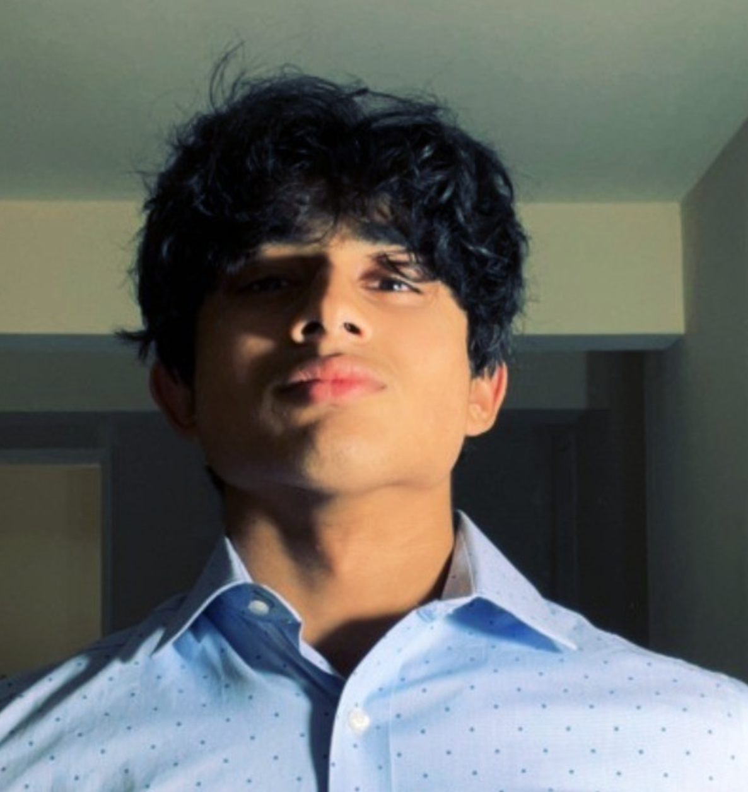
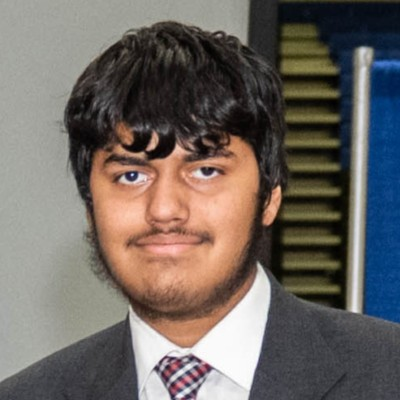
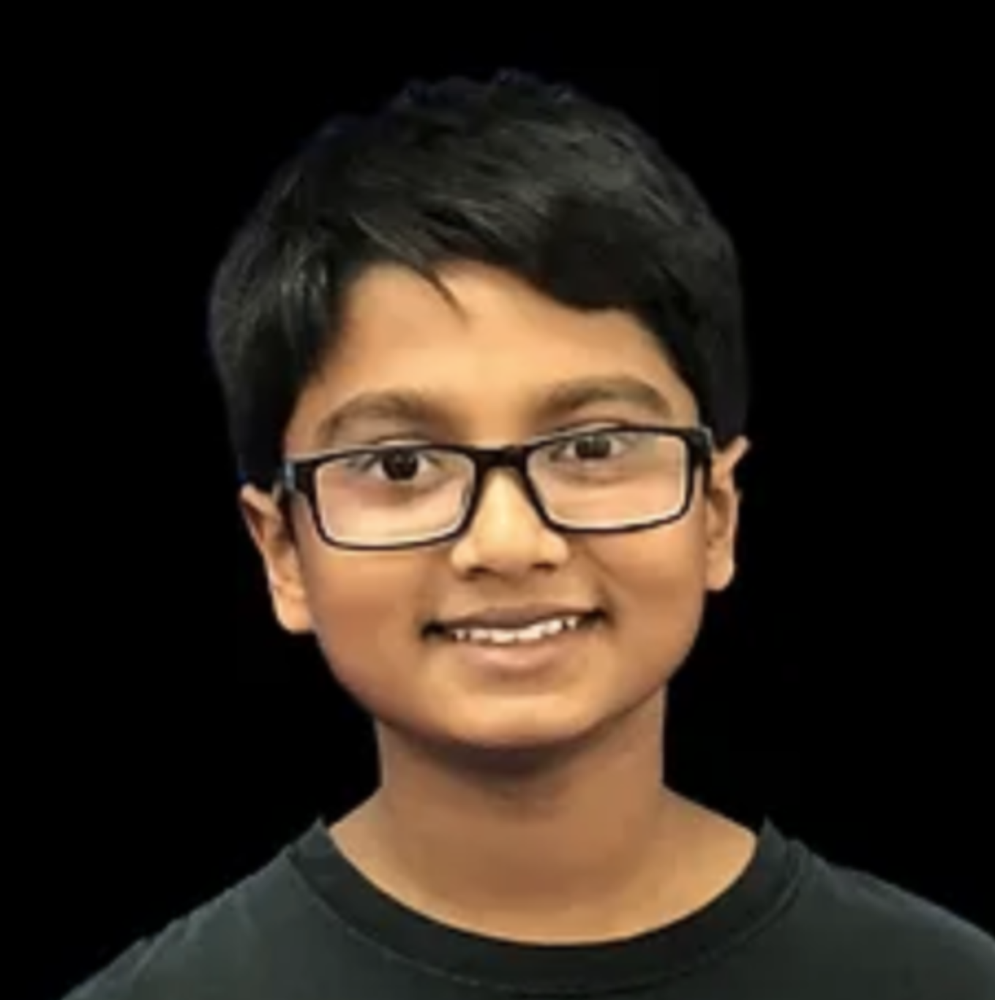
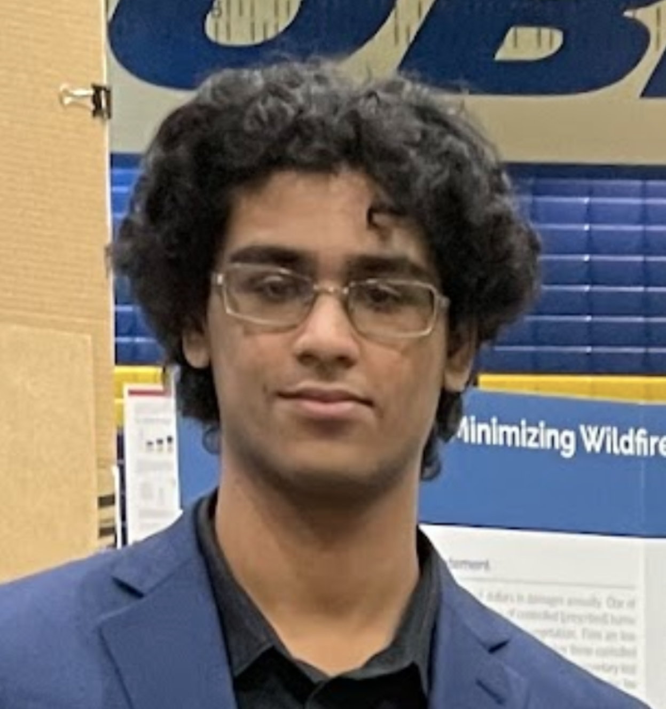
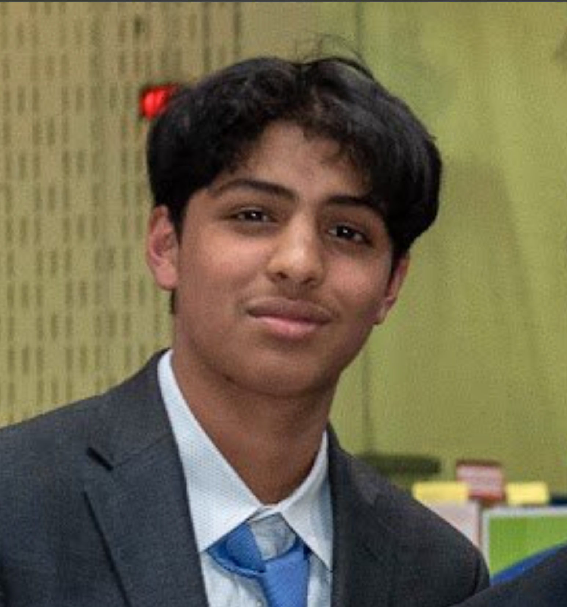

Our Story
Our story began at Chantilly High School, where founders Aryan and Gautham turned a casual conversation about AI into a passion project. Recognizing the need for interdisciplinary collaboration, Aryan and Gautham reached out to Arnav, a passionate researcher from Bergen County Academies with a deep interest in neuroscience, to bring a holistic perspective to their project. With backgrounds in AI and neuroscience, and achievements like the Gold level status in the USA Computing Olympiad, our team is uniquely qualified to tackle this challenge.
Our Team

Gautham Ramachandran
Co-founder and CEO

Aryan Raj
Co-founder and CFO
Sriram Nallani
CTO

Arnav Adepu
Lead Researcher

Rishi Jagarlapudi
Developer

Eeshan Dandamudi
Researcher